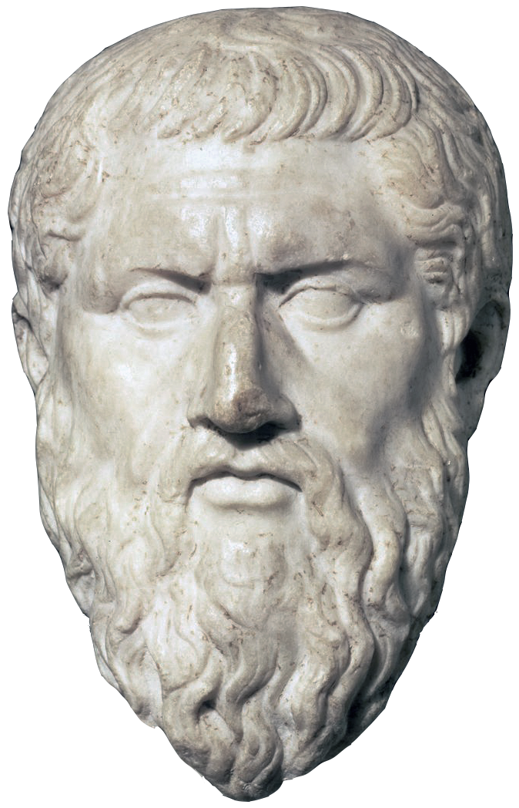
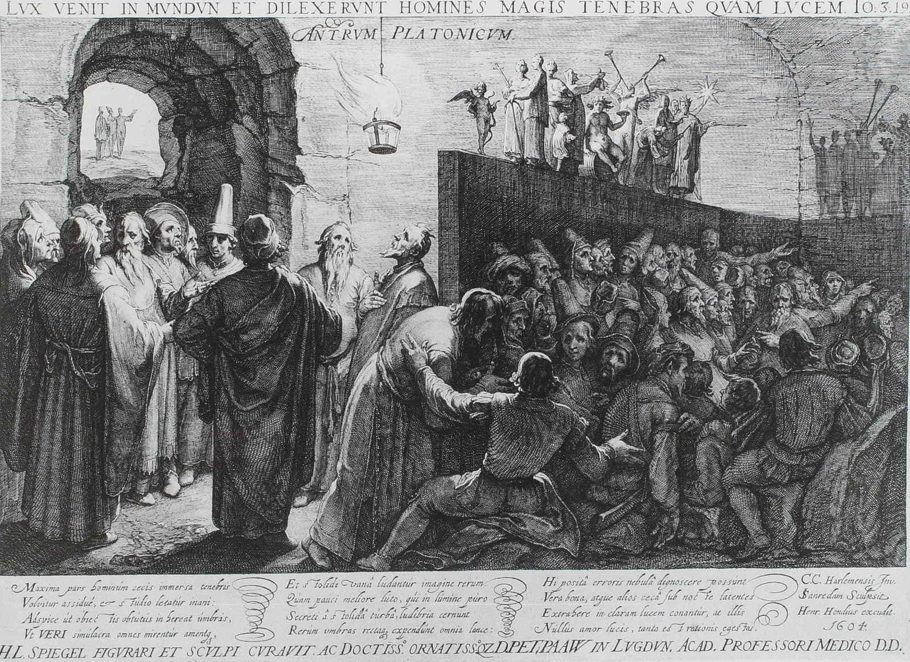

3. gaia · Atenasko Platon
Platonengan sartzeko
Platonekin (o.a.a. 427 inguru - o.a.a. 347) aldatu egiten da irakurriko dugunaren eskala. Honaino ideia solteak, zatiak, jarrerak bildu ditugu; orain, lehen aldiz, sistema batekin egiten dugu topo: azalpen oso batekin, non errealitateak, ezagutzak, arimak, bertuteak eta politikak elkarri eusten baitiote. Horregatik eskaintzen diogu gai oso bat, eta horregatik komeni da mapa ikustea xehetasunetan sartu aurretik.
Autore bat, sistema bat. Dena artikulatzen duen pieza bereizketa bat da, agian jada entzutez ezagutuko duzuna: ikusten ditugun gauzak eta gauzok direna izanarazten dituzten Formak bereizten dituena. Hortik sortzen da gainerako guztia. Errealitateak bi plano baditu, bi modu egongo dira haietara iristeko, ezagutzaren bi maila (§10); gizakiak Formak ezagut baditzake, haren arimak goi-natura horretatik zerbait izango du (§11); arimak zatiak baditu, bertute bat egongo da bakoitzarentzat (§12); eta bertuteak arima ordenatzen badu, beste horrenbestek ordenatu behar du hiria (§13). Eredu bera dabil sistema osoan goitik behera, eta Platonek esplizitu egiten du paralelismo ospetsu batean: arima justuak eta hiri justuak egitura bera dute. Paralelismo hori ulertzen duenak Platon ulertzen du.
Bizitza eta zirkunstantzia. Hori guztia ez da hutsean pentsatzen. Platon Atenasko aristokrata bat da, Peloponesoko gerra galdu berri duen eta ezegonkortasun eta indarkeria politikoko urteak bizi dituen hiri batekoa. Gobernatzera deitua zegoen, eta politikatik aldendu egin zen. Kausak badu izena: bere maisu Sokratesen (o.a.a. 470 inguru - o.a.a. 399) kondena eta heriotza, Atenasko demokraziak berak exekutatu baitzuen 399. urtean. Hiriak berak ezagutzen zuen gizonik justuena hiltzeak zauri bat eta galdera bat utzi zizkion Platoni, aurrerantzean utziko ez zutenak: nork gobernatu behar du, eta nola prestatzen da halakoa?
Akademia. Bere garaiko politikaz etsita, Platonek Akademia sortu zuen o.a.a. 387 inguru, Atenasko kanpoaldean Academo heroiari eskainitako baso batean; hortik datorkio izena, eta hortik datoz gure «akademia» eta «akademiko» hitzak. Ez zen eskola arrunt bat izan. Mendebaldeko goi-mailako irakaskuntzako lehen erakundetzat jo ohi da: komunitate egonkor eta iraunkorra, liburutegi eta bizitza propioarekin, matematika, dialektika eta filosofia ikertzeari eta irakasteari emana (jakintza jakintzagatik, ez sofistek saltzen zuten erretorika baliagarria)1. Akademiak ia hiru mendez iraun zuen sortzailea hil ondoren, harik eta Sila jeneral erromatarrak Atenas arpilatu zuenean, o.a.a. 86. urtean, sakabanatuta geratu zen arte; eta mintegi hartatik atera zen, beste askoren artean, Aristoteles, han hogei bat urtez ikasi baitzuen berea sortu aurretik. Haren ereduak (maisuak eta ikasleak jakintzari eskainitako erakunde batean biltzeak) arrasto luzea utzi zuen hezkuntzaren historia osoan, gure unibertsitateetaraino.
Elkarrizketaren forma. Azken irakurketa-ohar bat. Platonek ez zituen tratatuak idatzi, elkarrizketak baizik: solasaldiak, ia beti Sokrates protagonista dutela, non ideiak bilatu, eztabaidatu eta batzuetan itxi gabe geratzen baitira. Mugimenduan dagoen pentsamendua da, ez diktatutako doktrina. Gu batez ere haren heldutasuneko obretan oinarrituko gara, bereziki Errepublikan, non sistema jada osatua ageri baita.
Has gaitezen, bada, eraikin osoa gainean altxatzen den zimendutik: errealitateari buruzko haren teoriatik.

§09 · Platon: errealitatea — Formen teoria eta Ongia
Marraztu zirkulu bat paper batean. Kontu handiz aritu arren, marrazten dugun zirkunferentzia bat bera ere ez da zirkulu perfektua izango: beti egongo da puntu bat zentrotik beste bat baino zertxobait hurbilago, trazu bat pixka bat lodiagoa, pultsuaren dardara txikiren bat. Eta, hala ere, matematikari batek «zirkuluari» buruzko teorema bat frogatzen duenean, ez da marrazki akastun horietako bati buruz ari, haietako bat bera ere erabat izatera iristen ez den zerbaiti buruz baizik. Zertaz ari da, orduan? Non dago zirkulu perfektu hori, marraztutako guztiak haren kopia hutseginak badira?
Galdera horri —eta justiziari, edertasunari edo ongiari buruzko antzeko beste batzuei— bere obra osoko tesirik eragin handienekoaz erantzuten dio Platonek: badago benetako errealitate bat, betierekoa eta aldaezina, ikusten eta ukitzen dugun mundutik bereizia. Formen mundua deitu zion. Atal honek azaltzen du zer diren Formak, zergatik ikusten den Platon haiek postulatzera behartuta, eta zergatik jartzen duen, gailurrean, gainerako guztiak ordenatzen eta zentzuz janzten dituen Forma bat: Ongiaren Forma.
Sokratesen herentzia: definizioen bilaketa. Platon ez da hutsetik abiatzen; maisuak utzitako arazo bat jasotzen du. Sokrates Atenasen barrena ibiltzen zen galdezka —«zer da adorea?», «zer da justizia?»; §06n ikusi genuen—, eta adibide-zerrenda baztertu egiten zuen erantzun gisa: ez zituen ekintza adoretsuen kasuak nahi, guzti-guztiek komunean dutena baizik, adoretsu egiten dituena, edozein kasutarako balioko lukeena, edozein garai eta lekutan. Horra apuntatzen zuen definizio sokratikoak: unibertsal egonkor batera. Baina Sokratesek unibertsal horiek bilatu zituen inoiz esan gabe non dauden eta zer errealitate mota duten. Platonek emango du maisuak eman ez zuen pausoa.
Presokratikoen herentzia: isuria eta izatea. Bigarren haria lehenagotik dator. Heraklitok irakatsia zuen dena isurian dagoela —pánta rhei, §03—: zentzumenezko gauzak jaio, aldatu eta hil egiten dira etengabe, halako moldez non hautematen dugun ezer ez baita bere buruarekiko berdin geratzen une bakar batez ere. Parmenidesek, aldiz, eutsia zion benetako izateaz gauza bakarra esan daitekeela: badela; bat, geldia, betierekoa (§03). Platonek ez du bien artean aukeratzen: banatu egiten ditu. Mundu sentikorra heraklitoarra da, aldaketa hutsa, eta horregatik hartaz iritzia baino ezin daiteke izan. Baina benetako ezagutzak, zientziak, objektu parmenidear bat eskatzen du: zerbait finkoa, hari buruz benetan jakin ahal izateko modukoa. Objektu hori aldatzen den munduan ez badago, beste nonbait egon behar du.
Zer den Forma bat —eta zergatik ez diogun «Idea» deitzen. «Beste nonbait» hori Formen mundua da. Eta hemen, hasi orduko, lagun faltsu bat desaktibatu behar dugu. Platonen hitza idéa edo eîdos da —«forma», «itxura», «begiradari erakusten zaiona»—, eta tradizioak «Idea» gisa itzuli zuen. Baina «ideak», gaur egun, buruko eduki bat esan nahi du: pentsamendu bat, buruan daukazun kontzeptu bat. Eta hori Platonek esan nahi duenaren justu kontrakoa da. Nahasbidea saihesteko, eskuliburu honetan Formak deituko diegu2. Forma bat ez da zure adimenak gauzetatik abiatuta fabrikatzen duen abstrakzio bat; beregain den errealitate bat da, pentsatuko duen inor egon zein ez. Gauzek ez dituzte Formak asmatzen: Formak lehenagokoak dira, eta gauzek kopiatu egiten dituzte.
Zehazki, ezaugarri hauek biltzen ditu Forma batek —komeni da denak batera gogoan izatea—:
- Beregainekoak. Beren kabuz existitzen dira, adimenetik kanpo eta gauzetatik kanpo; ez dira ez gure pentsamenduak, ez objektuei itsatsitako propietateak.
- Unibertsalak. Forma bakoitza klase oso bati dagokio: Edertasuna, ez gauza eder hau edo hura.
- Bakarrak. Forma bakarra dago klase bakoitzeko: partikular askoren aurrean, eredua bat da.
- Aldaezinak eta betierekoak. Ez dira jaiotzen, ez aldatzen, ez hiltzen: denboratik at daude.
- Perfektuak. Gauza sentikorrek imitatu baino egiten ez duten eredu burutua dira, inoiz erdietsi gabe.
- Adigarriak, ez sentikorrak. Ez dira ikusten, ez ukitzen; ez dute hedadurarik, ez kolorerik: adimenak soilik atzematen ditu.
- Errealaren kausa eta eredua. Gauza bat dena da —ederra, justua, berdina— bere Formaren partaide delako; Formak dira patroia, eta haren arabera dago mundu bat ordenaturik.
Bi mundu: sentikorra eta adigarria. Hemendik ateratzen da Platon ezagutarazi duen irudia: bi munduena. Batetik, mundu sentikorra dago: zentzumenez atzematen ditugun gauza anitz, aldakor eta galkorrena. Bestetik, mundu adigarria: Formena, adimenaz atzematen duguna. Lehenengoko gauzak bigarrenekoen kopia inperfektuak dira, marraztutako zirkuluak zirkulu perfektuaren aldean bezala. Platonek bereizketa zorrotza ezartzen du bien artean, chōrismós bat: Formak ez daude gauzen «barruan» beste propietate bat gehiago balira bezala; plano propio batean subsistitzen dute3.
Nola erlazionatzen diren gauzak eta Formak. Baina, bereizita badaude, zerk lotzen ditu bi munduak? Zergatik da ederra arrosa hau? Platonek hainbat erantzun saiatzen ditu, doktrina itxia baino gehiago irudiak direnak: gauzak Forman parte hartzen du (méthexis), imitatu egiten du (mímesis), edo Forma nolabait presente dago gauzan. Hiru kasuetan norabidea bera da: gauza sentikorra dena da —ederra, justua, berdina— berak agortzen ez duen Forma batera igortzen duelako. Kopiak ereduari zor dio bere izatea. Erlazio hori pentsatzeko zaila dela bazekien Platonek berak ere, urte batzuk geroago kritikapean jarri baitzuen4.
Ongiak koroaturiko hierarkia. Formek ez dute pilo nahasi bat osatzen. Ordenatu egiten dira: zabalenek partikularragoak hartzen dituzte beren baitan, eta guztiak hierarkia batean artikulatzen dira. Eta hierarkia horrek gailur bat du. Guztien gainetik, Ongiaren Forma jartzen du Platonek: ez besteen arteko beste Forma bat, baizik eta guztiak aldi berean baliotsu eta adigarri egiten dituen printzipioa, mundu adigarri osoari batasuna eta zentzua ematen diona. Benetan ezagutzea, Platonentzat, Ongiraino igotzea da.
Eguzkiaren konparazioa. Ongia hain da gorena, non Platonek aitortzen baitu ezin duela aurrez aurre deskribatu, eta konparazio ospetsu batera jotzen du, Errepublikaren VI. liburuan: Ongia, mundu adigarrian, eguzkia mundu ikusgarrian dena da. Eguzkiak bi gauza egiten ditu. Lehenik, argia ematen du: haren bidez ikusten dute begiek, eta gauzak ikusgarri bihurtzen dira; era berean, Ongia da argia, zeinaren bidez adimenak ezagutzen baitu eta Formak adigarri bihurtzen baitira. Baina eguzkiak beste zerbait ere egiten du: bere beroaz, gauzak jaioarazi eta haziarazi egiten ditu. Hemen ere eusten dio paraleloak: Ongiak ez die Formei adigarritasuna bakarrik ematen; haien izatearen eta esentziaren kausa ere bada. Horregatik iristen da Platon esatera Ongia «izatearen harago» dagoela —epékeina tēs ousías— duintasunean eta boterean5.
Eta hemen, konparazioak galdera baten atarian uzten gaitu. Ongia baldin bada adigarri den oro argitzen duen eguzkia, nola igotzen da hartaraino giza arima, mundu sentikorreko itzaletatik abiatzen dena? Zer maila zeharkatzen ditu igoera horrek, zer metodok gidatzen du, eta zergatik konparatzen du Platonek gure abiapuntuko egoera haitzulo batean kateaturiko preso batzuenarekin? Bide horretaz —ezagutzaz eta haren metodoaz— §10 arduratzen da.
§10 · Platon: ezagutza
§09 galdera batekin itxi zen: Ongia adigarri den guztia argitzen duen eguzkia bada, nola igotzen da harenganaino giza arima, itzaletatik abiatzen dena? Baina horren aurretik bada beste galdera bat, oinarrizkoagoa. Formak, esan genuen, ez dira ikusten, ez ukitzen: Justizian edo Berdintasunean ez dago hautemateko kolorerik, ez soinurik, ez pisurik. Eta, hala ere, ezagutu egiten ditugu. Bi makila «ia berdinak direla, baina ez erabat» diozunean, zure begiek inoiz ikusi ez duten Berdintasun perfektu baten aldean neurtzen ari zara. Nondik atera duzu? Horretaz arduratzen da atal hau: ezagutza nondik datorren, nola eraikitzen den eta noraino iristen den.
Jatorria: gogoratzen duen arima. Platonentzat, benetako ezagutza ez da zentzumenetatik sartzen. Zentzumenek aldatzen den mundua ematen digute, eta aldatzen denaz ez dago zientziarik, iritzia baino ez (§09). Orduan, nondik ateratzen da? Barrutik. Ezagutzea, dio Platonek, gogoratzea da (anamnesia): arimak, gorputz batean haragitu aurretik, Formak begietsi zituen, eta ikastea ez da zerbait berria jasotzea, jakite lokartu hura berreskuratzea baizik6. Platonek arima hegodun gisa ere irudikatu zuen: gorputz batera erori aurretik, jainkoen segizioari jarraitu eta Formak beren garbitasunean begietsi zituen arima gisa —gurdiaren irudi hori §11n zabalduko dugu—. Gainera, Menoneko esperimentu ospetsu batekin irudikatzen du: Sokratesek, galderen bidez, geometria inoiz ikasi ez duen esklabo bat gidatzen du, karratuari buruzko egia bat «aurkitzera» iritsi arte; ez dio ezer irakatsi, dio Platonek, gogoratzen lagundu baino ez dio egin. Eta Fedonen, lehengo adibidearekin arrazoitzen du: gauza berdinak Berdintasunaren beraren aldean «motz geratzen direla» epaitzen dugu; beraz, Berdintasun hori ezagutzen genuen jada. Formak ariman geratzen dira, zigilu baten aztarna bezala, eta horregatik antzematen ditugu gauzetan haien kopia inperfektuak. Eta kontuz: jakite hori ez da gure asmakizuna, ezta kontu subjektiboa ere —hala balitz, nork bere Formak izango lituzke; baina Berdintasuna, edo Justizia, berberak dira guztiontzat—. Gogoratzen duen ahalmena ez da begia, ez belarria, adimena baizik (noûs); zentzumenek, asko jota, oroitzapena esnatzen dute, erretratu batek bertan ez dagoen lagunaren oroimena esnatzen duen bezala.
Prozesua: jakitearen mailak eta dialektika. Gogoratzea ez da kolpe bakar bat, mailaz mailako igoera bat baizik. Eta mailak ez dira arbitrarioak: Platon printzipio batetik abiatzen da —izatea eta ezagutzea proportzionalak dira: gehiago dena hobeto ezagutzen da, eta ez denaz ez dago inolako ezagutzarik—, halako moldez non errealitate-maila bakoitzari jakite-maila bat dagokion. Lerro zatituaren irudiarekin marrazten du (Errepublika VI): imajinatu lau tartetan ebakitako lerro bat, ilunenetik argitsuenera Taula 2. Behean, mundu sentikorrean, iritzia (doxa) baino ez da posible: lehenik irudimena (eikasía), itzaletan eta irudietan geratzen dena —sagar baten marrazkia—; gero sinestea (pistis), gauza fisikoez fidatzen dena —sagarra bera—. Goian, mundu adigarrian, zientzia (episteme) hasten da: lehenik arrazoi diskurtsiboa (diánoia), matematikariarena, zorrotz arrazoitzen duena, baina zalantzan jartzen ez dituen hipotesietatik abiatzen dena eta marraztutako irudietan bermatzen dena; eta, gailurrean, kontenplazioa (nóesis), irudi oro alde batera utzi eta Formetara beretara igotzen dena.
| Eremua | Ezagutzeko modua | Objektu ezagutua | Grekoa |
|---|---|---|---|
| Adigarria — zientzia (episteme) | Kontenplazioa / dialektika | Formak; gailurrean, Ongiarena | nóesis |
| Arrazoi diskurtsiboa | Objektu matematikoak (hipotesietatik abiatzen da, irudiak erabiltzen ditu) | diánoia | |
| Sentikorra — iritzia (doxa) | Sinestea | Gauza fisikoak | pistis |
| Irudimena | Itzalak, islak, irudiak | eikasía |
Nola igotzen da azken tarte hori? Dialektikaren bidez, filosofiaren berezko metodoaz. Matematika erdibidean geratzen da: bere hipotesiak ontzat ematen ditu —zer den puntua, zer den unitatea— eta ez ditu justifikatzen. Dialektika, aldiz, ez da batean ere gelditzen: batetik bestera doa gorantz, haien oinarriaren bila, ezeren hipotesi ez den printzipio batera iritsi arte —printzipio ez-hipotetikoa, Ongiaren Forma (§09)—, eta handik berriro jaisten da, dena haren argitan ordenatuz. Erabat ezagutzea horraino iritsi izana da: Forma bakoitza Ongiaren mende nola dagoen ikustea.
Eta bada oraindik igotzeko beste modu bat, ez arrazoibidez, desiraz baizik: eros. Platonentzat, maitasuna ez da Edertasuna, ez Ongia, bien egarria baizik. Gorputz eder batez maitemintzen hasten da eta, hor gelditzen ez bada, gorputzen edertasunetik arimen, legeen eta jakiteen edertasunera igotzen da, Edertasunera beraraino, dagoeneko Ongia dena. Benetako filosofoa, zentzu horretan, maitemindu bat da: filo-sofiak, hitzez hitz, jakitearekiko maitasuna esan nahi du. Dialektika arrazoiaren bidez igotzen da; erosa, absolutuaren irrikaz. Biek eguzki berera daramate.
Irismena: Formen zientzia, mundu sentikorraren iritzia. Horrek aldi berean finkatzen du ezagutzak zer bermatzen duen eta noraino iristen ez den. Zientzia bermatzen du —jakite sendo eta kausala, gauzen zergatia ezagutzen duena—, baina Formena bakarrik, haiek bakarrik baitira egonkorrak; eta haren azken bermea Ongiaren Forma da, Formak adigarri egiten dituen printzipioa (§09ko eguzkia). Mundu sentikorraz, aldatzeari uzten ez dionaz, ez dago zientzia posiblerik: gehienez ere iritzia dago, eta iritziak, itua jotzen badu ere, ez daki zergatik asmatzen duen; beraz, ez da zientzia. Horregatik, Platonentzat, gorputza eta zentzumenak ez dira jakitearen bidea, haren zama baizik: filosofoak haietaz ez fidatzen ikasten du.
Ibilbide hori guztia —itzaletatik argira— irudi bakar batean kontatzen du Platonek, filosofiaren ospetsuenean: haitzuloaren alegoria, zeinarekin irekitzen baitu Errepublikaren VII. liburua, PAUko nahitaezko irakurgaietako bat7. Imajinatu preso batzuk, txikitatik kateaturik haitzulo baten hondoan, sarrerari bizkarra emanda: horman proiektatutako itzalak baino ez dituzte ikusten, eta errealitate bakartzat hartzen dituzte. Horixe da mailarik apalena, irudimena Taula 2. Haien bizkarrean su bat dago pizturik —imitaziozko eguzki bat—, itzal horiek proiektatzen dituena. Bat askatzen bada eta surantz eta objektuetarantz jiratzen bada, sinestera igaro da. Indarrez arrastaka eramanda, haitzuloaren ataria zeharkatzen du —bi munduen arteko muga markatzen duena— eta kanpora irteten da: argiak, hasieran, itsutu egiten du; pixkanaka, lehenik itzalak eta uretako islak bereizten ditu, gero gauzak berak eta, azkenean, eguzkia. Mundu adigarria zeharkatu du Ongiaren Formaraino (§09).
Alegoriak beste bi gauza ere esaten ditu. Bat, hezkuntzaz: irakastea ez da datuak arima huts batera isurtzea, arima osoa argirantz jiraraztea baizik —paideía begiradaren bihurtze bat da, ez informazio-lekualdatze bat—. Bestea, betebeharraz: eguzkia ikusi duena ezin da kanpoan geratu; haitzulora itzuli behar du, ilunpetan eta isekaz inguraturik, kateaturik jarraitzen dutenak askatzera. Jaitsiera hori zergatik den betebehar bat —eta ikusi dutenek zergatik gobernatu behar duten— §13n ikusiko dugu.

Komeni da erreparatzea honek guztiak zer ematen duen jakintzat. Jaio aurretik begietsitakoa gogoratzea, itzaletatik Formetara igotzea, gorputzetik eta haren zentzumenetatik askatzea: horietako ezer ez litzateke posible izango sentikorretik aske egiteko gai den eta adigarriarekin ahaidetuta dagoen arimarik gabe. Zer da, orduan, gogoratzen, igotzen eta askatzen den arima hori? Horixe da §11ko galdera.
§11 · Platon: psikea
§10 galdera batekin amaitu zen: zer da Formak gogoratzen dituen, itzaletatik argira igotzen den eta gorputzetik askatzen den arima hori? Platonen ezagutzaren teoria osoa arimaren ideia baten gainean dago eraikita —psychéaren gainean—, eta horri eskaintzen diogu atal hau.
Bi printzipio: arima eta gorputza. Platonen antropologia dualista da: gizakia bi printzipioz osatua dago, arimaz eta gorputzaz, eta ez zati berdinetan. Gorputza jaio, aldatu eta hil egiten da; arimarengandik jasotzen du bizia, arima baita haren bizi-printzipioa. Arima, aldiz, zati jainkotiarra da, benetan gizaki egiten gaituena: gorputza baino lehen sortu zen, mundu sentikorraren gorabeherek ez dute ukitzen eta —bere zatirik gorenean bederen— hilezkorra da. Bien artean ez dago harmoniarik, tentsioa baizik. Orfismoaren oinordeko (§03), Platonek gorputza ia arimaren gartzelatzat dauka: haren erruz, dio, pasioetan, liskarretan eta ezjakintasunean nahasten gara8. Horregatik, filosofoaren zeregina arima araztea da gorputzean dagoen bitartean, sentikorretik askatzen trebatuz.
Hiru zatiko arima. Baina arima ez da bakuna. Platonek hiru zati bereizten ditu hartan, bakoitza bere funtzioarekin, gorputzean bere kokalekuarekin eta bere desira propioarekin. Hori begi-bistakoa egiteko, irudi batera jo zuen, Fedroko gurdi hegodunarenera: gidari bat, bi zaldiko uztarri bat gidatzen.
- Arrazoi-zatia (logistikón), pentsamenduaren eta borondatearen egoitza, beste biak gobernatu eta orekatu behar dituena da; zentzumenetatik urrunen dagoena eta benetan hilezkorra den bakarra. Buruan dago. Hedeak daramatzan gidaria da.
- Zati suminkorra (thymoeidés), adorearen, kemenaren eta ohore-senaren egoitza, bularrean dago. Zaldi zuria da, berez arrazoiaren alde jartzen dena —nahiz eta heziketa txar batek apetituen bandora pasa dezakeen—.
- Irritsezko zatia (epithymetikón), apetituen eta bizi-beharren egoitza —jana, edana, sexua—, sabelean dago. Zaldi basatia da, lurrerantz tiratzen duena eta eutsi beharrekoa.
Zati bakoitzari bertute propio bat dagokio, eta haien orekari arimaren justizia; baina bertuteez §12n arduratuko gara. Eta Platonek hiruko egitura bera hirian errepikatua ikusiko duenez, hartara itzuliko gara haren politika lantzean (§13).
Arima hilezkorra eta metempsikosia. Arimak jaio aurretik Formak kontenplatu bazituen (§10eko anamnesia), gorputza baino lehen existitzen dela eta hari bizirik irauten diola esan nahi du. Platonek defendatzen du, hain zuzen, arima —haren arrazoi-zatia— hilezkorra dela9, eta metempsikosia edo berraragiztapena jasaten duela, doktrina hori ere orfismotik hartu eta bere erara birlandua. Fedonen, heriotzaren ostean gorputzezkoari atxikita noraezean dabiltzan arimak deskribatzen ditu, gorputz berri batean berraragiztatu arte —gizakiarenean nahiz animaliarenean—, nola bizi izan diren arabera: arima justuak bizitza hobe bat espero dezake. Eta Errepublikan Er-en mitoarekin kontatzen du, hildakoen artetik itzultzen den gerlari batena: arimek, kopuru mugatuan, mila urte inguruko zikloa egiten dute bizitza batetik bestera10, eta berraragiztatu aurretik beren hurrengo bizitza aukeratzen dute, halako moldez non bakoitza baita, neurri handi batean, bere patuaren erantzule.
Horrelako arima batek —hirutan banatua, ordenatua ala desordenatua, hedeak nork daramatzan arabera— berehalako galdera moral bat planteatzen du: noiz dago ondo arima bat? Zati bakoitzak berea egiten duenean, arrazoiaren agindupean. Hori da bertuteen atea, eta hortik sartuko gara §12n.
§12 · Platon: bertuteak
§11k galdera bat utzi zuen airean: noiz dago ondo arima bat? Platonen erantzuna dotorea da, eta haren psikologiaren forma bera du. Arima bat ondo dago bere hiru zatietako bakoitzak berea egiten duenean eta arrazoiak gobernatzen duenean; gaizki dago zaldiek gainezka egin eta gurdi-gidaria arrastaka daramatenean. Arimaren jarrera on horri bertutea (areté) deitzen diogu.
Bertute bat zati bakoitzarentzat. Gogora dezagun zer den areté bat: zerbaitek bere funtzioa ondo betetzea dakarren bikaintasuna; zaldiarena, korrika egitea da, eta aiztoarena, ebakitzea (§06). Arimak hiru zati dituenez (§11), hiru bikaintasun ditu, zati bakoitzeko bana:
- jakinduria (sophía) arrazoi-zatiaren bertutea da: multzo osoaren onari begira gobernatzea ahalbidetzen dion jakintza;
- ausardia (andreía) zati suminkorraren bertutea da: arriskuaren eta desiraren aurrean, arrazoiak agindu duenari tinko eustea;
- neurritasuna (sōphrosýnē) irritsezko zatiaren bertutea da: apetituak menderatzea11.
Justizia: arimaren ordena. Laugarren bat falta da, eta erabakigarria da. Justizia (dikaiosýnē) ez da beste hiruren ondoko bertute bat gehiago, hirurak beren lekuan daudenean sortzen dena baizik: zati bakoitzak bere zeregina egiten du, eta ez dago besterena usurpatzen duenik. Arima justua ordenan dagoen arima da (arrazoiak gobernatua, kemenak defendatua, apetituek zerbitzatua), eta ordena hori, Platonek dioenez, arimaren osasuna da; injustizia, berriz, haren gaixotasuna da: arima gaixoa, konturatzen ez bada ere. Hortik dator Platonek indar handiz defendatuko duen ondorioa: justu izatea ez da gogoz bestera onartzen den sakrifizio bat, norberari benetan komeni zaion gauza bakarra baizik. Inork ez du, jakinaren gainean, gaixorik egotea aukeratzen.
Eta hori guztia, azken batean, jakintzan oinarritzen da. Agindu behar duen zatia arrazoi-zatia da, hain zuzen ere, ongia ezagutu dezakeelako; eta zer den ona benetan ezagutzen duenak ongi jokatzen du. Sokratesen eta Platonen tesia da, §07an ikusi genuena: «bertutea ezagutza da, bizioa ezjakintasuna». Bertuteak heztea, beraz, ezagutzen duen zati hori lantzea izango da batez ere.
Lau bertute hauek (jakinduria, ausardia, neurritasuna eta justizia) arrakasta izango dute: geroko tradizioak bertute kardinalak deituko dienak dira, Erdi Aro kristauak bizitza moralaren gontz (latinez cardo, «gontza») gisa jarriko dituenak.
Azken gauza bat, hurrengo atala irekitzen duena. Justizia baldin bada arimaren zati bakoitzak berea egitea, arrazoiaren gobernupean, ez ote da gauza bera gertatuko komunitate batean? Platon ziur dago arimak eta hiriak egitura bera partekatzen dutela (hiru zati, hiru funtzio, justizia bakar bat), eta bata bestera begiratuz ulertzen dela. Hiri justu horretaz dihardu §13k.
§13 · Platon: proiektu politikoa
Ikusi ditugu errealitatea (§09), ezagutza (§10), arima (§11) eta haren bertuteak (§12); orain pieza horiek galdera bakar batean muntatzen dira, Sokratesen heriotzak iltzatuta utzi zion hartan: nork gobernatu behar du, eta nola eraikitzen da hiri justu bat? Hari erantzuteko idatzi zuen bere obra nagusia, Errepublika, eta bertan diseinatu zuen hiri ideala, kallípolis edo «hiri ederra».
Nondik sortzen den hiria. Has gaitezen kontu lauenetik: zergatik bizi gara hirietan? Geure kabuz aski ez garelako. Inork ez du bere kasa ekoizten behar duen janaria, jantzia eta etxea; besteak behar ditugu. Mendekotasun horretatik sortzen da lan-banaketa, eta harekin batera hiru oinarrizko zeregin: ondasunak ekoiztea, komunitatea defendatzea eta multzoa zuzentzea. Zeregin bakoitzari talde bat dagokio, eta hala, hiri justuak hiru klase ditu: ekoizleak (nekazariak, artisauak, merkatariak), zaindariak (gudariak) eta agintariak.
Hiria arima da, tamaina handian. Hemen agertzen da haren politika osoa egituratzen duen ideia: hiriak arimaren egitura bera du. Hiru klaseak arimaren hiru zatiei dagozkie (§11), eta bakoitzak bere bertutea du (§12), haiek bezalaxe.
| Arimaren zatia | Hiriko klasea | Funtzioa | Bertutea |
|---|---|---|---|
| Arrazoi-zatia | Agintariak (filosofoak) | Guztion onari begira zuzentzea | Jakinduria |
| Zati suminkorra | Zaindariak | Hiria defendatzea | Ausardia |
| Irritsezko zatia | Ekoizleak | Ekoiztea eta hornitzea | Neurritasuna |
Eta justiziak berdin funtzionatzen du bi planoetan: hiri bat justua da klase bakoitzak berea egiten duenean eta bat ere besteenean sartzen ez denean, ekoizleak ekoizten, zaindariak defendatzen eta agintariak zuzentzen duenean; arima justua den bezalaxe, zati bakoitzak bere funtzioa arrazoiaren agindupean betetzen duenean. Justizia, hirian nahiz ariman, ordena harmoniko hori da; injustizia, haren desordena.
Errege-filosofoa. Eta nork gobernatu behar du? Platonen erantzuna da haren politikako ospetsuena, eta polemikoena: filosofoek gobernatu behar dute. Ez apetaz, aurreko guztiarekiko koherentziaz baizik. Ondo gobernatzea hiria onerantz zuzentzea da; eta hori Ongia ezagutzen duenak bakarrik egin dezake, haitzulotik irten eta eguzkia ikusi duenak (§09, §10). Horregatik idazten du Platonek ezen, filosofoak errege izan arte edo erregeak filosofatzen hasi arte, hirien gaitzek ez dutela amaierarik izango. Agintari horiek prestatzeak bide luzea eskatzen du: matematika-urteen ondoren, hogeita hamar urte inguru dituztela dialektikari ekiten diote, eta horrek Ongiaren Forma kontenplatzera eramaten ditu; gero, hamabost urte kargu praktikoetan, zaildu egiten dituztenak; eta berrogeita hamar urte aldera bakarrik, jada frogatuta, gobernatzen dute. Eta hemen kitatzen du Platonek haitzuloak zintzilik utzitako zorra: argia ikusi duenak nahiago luke hura kontenplatzen geratu, baina erdi-ilunpera itzuli behar du, besteak gobernatzera. Ez du anbizioz egiten, hori baita agintari batengan seinalerik txarrena, betebeharrez baizik. Ia behartu egin behar da.
Hiriaren batasuna eta legea. Zertarako hau guztia? Platonek beste edozeinen gainetik jartzen duen helburu baterako: hiriaren batasuna. Hiri baten gaitzik handiena, dio, hura zatitzen eta alderditan banatzen duena da; onik handiena, batuta mantentzen duena12. Legea eta erakundeak batasun hori eta multzoaren ona lortzeko existitzen dira, ez zati batena. Hortik datoz Errepublikako neurririk zorrotzenak eta eztabaidatuenak, guztiak zaindari eta agintarientzat pentsatuak: haien artean ez da jabetza pribaturik izango, ez familia propiorik; aitzitik, ondasunak partekatuko dituzte, eta seme-alabak ere elkarrekin haziko dira, jabetzak eta familiak sortzen baitute hiria puskatan hausten duen «hau nirea da eta ez zurea» hura. Kontua da inork ez dezala beretzat tira egin, denek esan dezatela «gurea». Logika beraren arabera, zaindarien artean emakumeek eta gizonek hezkuntza bera jasotzen dute eta funtzio berak betetzen dituzte, nahiz eta Platonek emakumeak berez ahulagotzat hartzen jarraitu13.
Aristokrazia eta haren degradazioa. Onenek gobernatutako hiria da Platonek aristokrazia deitzen duena; hitzez hitz, «onenen gobernua» esan nahi du. Harentzat erregimen justu bakarra da, bertan arrazoiak gobernatzen duelako, filosofoengan haragituta. Baina giza obra bakar batek ere ez du betiko irauten, eta Platonek deskribatzen du nola hiri ideala, usteltzen bada, gero eta erregimen okerragoetan endekatuz doan, bakoitza arrazoia tronutik kendu duen desira batek gobernatua14:
- Aristokrazia. Jakintsuen gobernua, arrazoiak gidatua. Erregimen justua, zeinaren degradazioak baitira gainerako guztiak.
- Timokrazia. Ohorea eta garaipena maite dituztenen gobernua, Esparta militarra bezala. Jada ez du jakinduriak agintzen, gerra-adoreak baizik.
- Oligarkia. Aberatsen gobernua, aberastasunaren arabera antolatua. Hiria bitan zatitzen da, bata aberatsena eta bestea pobreena.
- Demokrazia. Gehiengoaren gobernua, askatasuna beste ezeren gainetik jartzen duena. Nork bere gogara jokatzen du, eta iritzi guztiak berdintzat hartzen dira.
- Tirania. Erregimenik okerrena, demokraziaren askatasun-gehiegikeriatik jaioa: desordenatik buruzagi bat sortzen da, denak menderatzen dituena. Neurririk gabeko askatasuna esklabotzan amaitzen da.
Platonek mesfidantza bereziz begiratzen dio demokraziari: gehiengoak jakin gabe agintzen duen hiria, edonork edozertaz iritzia ematen duena iritzi guztiek berdin balio balute bezala (sofisten erlatibismo zaharra, §05), lemarik gabeko hiria da harentzat. Eta ez zuen ahazten demokrazia bat izan zela Sokrates kondenatu zuena.
Komeni da sekuentzia hau Aristotelesen sailkapenarekin ez nahastea (§19). Platonena dekadentzia-kontakizun bat da, arima-motei lotua, erregimen onenetik okerrenera jaisten dena. Aristotelesena tipologia estatiko bat izango da, konstituzioak zenbatek gobernatzen duten eta noren interesetan gobernatzen duten arabera ordenatzen dituena. Biek erabiltzen dute «aristokrazia» izena gobernu on baterako, baina Platonengan ideal bakarra da; Aristotelesek, berriz, forma posibleen arteko bat gehiago bezala ikusiko du, eta praktikan klase ertainaren errepublika hobetsiko du.
Hiri justuarekin ixten da Platonen sistema: Formetatik politikara, dena arkitektura berean ahokatzen da, Ongiak eutsia eta Justizia-ideia bakar batek zeharkatua. Eraikin ikusgarria da.
«Mendebaldeko» esatea da formula zuhurra: beste kultura batzuetan lehenagoko jakintza-guneak izan ziren. Eta komeni da Akademia hau ez nahastea mendeak geroago Atenasen jardun zuen eskola neoplatonikoarekin, Justiniano enperadoreak 529 o.a. urtean itxi zuenarekin: hura birfundazio berantiarra izan zen, ez Platonen erakunde jarraitua.↩︎
«Ideien teoria» da ia leku guztietan doktrina honi aurkituko diozun izena: komeni da ezagutzea. Beste itzultzaile batzuek, arrazoi beragatik, ordain gardenagoak bilatzen dituzte —Robin Waterfieldek, esaterako, «motak» gisa ematen ditu—. Hemen «Formak» nahiago dugu testu nagusian azaltzen den arrazoiagatik: Platonek postulatzen duen beregaineko errealitatea gure buruko eduki soil batekin ez nahasteko.↩︎
«Bi munduez» hitz egitea sinplifikazio didaktiko baliagarria da, baina eztabaidatua: interprete askok nahiago dute Platonengan errealitate mailak irakurri —itzaletik Formara— bi lurralde bereizi baino. Irudiari eutsi diogu bere argitasunagatik, haren mugaren jakitun.↩︎
Parmenides elkarrizketan, Platonek berak Parmenidesen ahotan jartzen ditu partaidetzaren teoriaren aurkako objekzioak —haien artean, «hirugarren gizona» deritzon argudioa—. Egileak bere ideia propioa kritikatzeak seinale garbia da: inoiz ez zuen amaitutzat eman.↩︎
Platon, Errepublika, VI, 508a-509b; «izatearen harago» formulak epékeina tēs ousías itzultzen du (509b). Egilearen itzulpena: «dignitatean eta boterean esentziaren gainetik dagoen gauza bat».↩︎
Anamnesiak aurresuposatzen du arima gorputza baino lehen existitu dela: jaraunspen orfiko-pitagoriko bat —arimaren hilezkortasuna eta transmigrazioa—, Platonek bere egin eta berlantzen duena. Pitagorasi eta orfismoari buruz, ikus §03; metempsikosi platonikoaz, ikus §11.↩︎
Haitzuloak hiru irakurketa onartzen ditu aldi berean: gnoseologikoa (ezagutzearen igoera), hezkuntzazkoa (heziketa, begiradaren bihurtze gisa) eta politikoa (ikusi duenaren betebeharra). Hemen jakitearen igoera gisa jarraitzen diogu; haren alde politikoa §13n lantzen da.↩︎
Orfikoek sôma (gorputza) eta sêma (hilobia) hitzen antzarekin jolasten zuten: gorputza arimaren hilobia litzateke. Platonek motiboa jasotzen du, nahiz eta ez den iristen gorputzarekiko erabateko mespretxura.↩︎
Platon ez da erabat uniformea: Fedonek arimaren hilezkortasuna argudiatzen du besterik gabe; beste leku batzuetan, ordea, arrazoi-zatiak bakarrik egiten dio ihes heriotzari, eta beste biak gorputzarekin batera hiltzen dira. Bigarren irakurketa horri jarraitzen diogu hemen.↩︎
Mila urte: ehun urte lurreko bizitzako, hamar urte mundu-ostean egon bakoitzeko. Hamar zenbakia ez da kasualitatea: pitagorismoaren zenbaki nagusia da.↩︎
Zehatz-mehatz, Platonek neurritasuna ez du hainbeste aurkezten zati bakar baten bertute gisa, hiru zatiek nork agindu behar duen erabakitzeko duten adostasun gisa baizik: kemenak eta apetituek arrazoiaren gobernua onartzeko duten akordioa.↩︎
Hiriaren onik handiena batasuna izatea eta gaitzik handiena zatiketa: Platon, Errepublika, V, 462a-b; filosofoen gobernua, 473c-d-n. Tarte horretatik, legea eta hiriaren batasuna, dator PAU ereduko testua.↩︎
Ondasunen eta familien komunitatea, eta jakintsu gutxi batzuen gobernua gainerakoen gainean, dira Platoni gehien kritikatu zaizkion puntuak: Aristotelesek gezurtatuko ditu (ikus §19), eta irakurle moderno batzuek, Popperrek esaterako, autoritarismoaren hazi bat ikusi zuten hemen. Beste batzuek justiziaren erretratu gisa irakurtzen dute, ez gobernu-plan gisa.↩︎
Platonek Errepublikako VIII–IX. liburuetan azaltzen du erregimenen sekuentzia, eta arimaren dekadentziarekin paraleloan marrazten du: erregimen bakoitzari izaera-mota bat dagokio.↩︎